HSBC Premier is the bank’s premium proposition for high-net-worth and internationally mobile customers, spanning multiple products, markets and channels
One premium proposition, delivered differently in every region
Premier had become complex and inconsistent across regions and channels. Benefits were unclear, eligibility was hard to understand and key journeys were harder than they needed to be.
HSBC also had rich customer data, but no shared approach to using it responsibly for personalisation.
Over eight weeks I reviewed five core journeys across digital and physical touchpoints, covering different personas, segments and customer states. The review surfaced more than 750 opportunities to improve the experience.
Credit Card, Mortgage, Children’s Account, Bank Account UK & International
Living in the moment, Prudent saver, Driven achiever
New-to-bank, New-to-segment
Logged out, Logged out with cookies, Logged in
Digital & in-branch experiences
By utilising rich customer data in bank statements and transaction history, we can spot the data and behavioural triggers that show someone is thinking about a mortgage or is eligible for one, and target them first with a Premier mortgage before another bank does.
Rich data in bank statements and transaction history reveals the triggers that show someone is thinking about a mortgage, so we reach them with a Premier mortgage before another bank does.
Hundreds of data points existed on each customer, yet the experience often behaved as if HSBC knew nothing about them. People re-entered information the bank already held, including their products, salary, location and dependants and saw few offers that felt genuinely relevant.
Is there commercial value in personalisation?
Do customers actually want it?
Where does helpful personalisation tip into intrusive?
Can we deliver it, legally and technically?
I played the findings back to senior stakeholders and agreed which opportunities mattered most for customers and commercially. I then led end-to-end journey concepts and ran a North Star workshop with 30+ senior bankers to align 11 divisions around one shared vision.
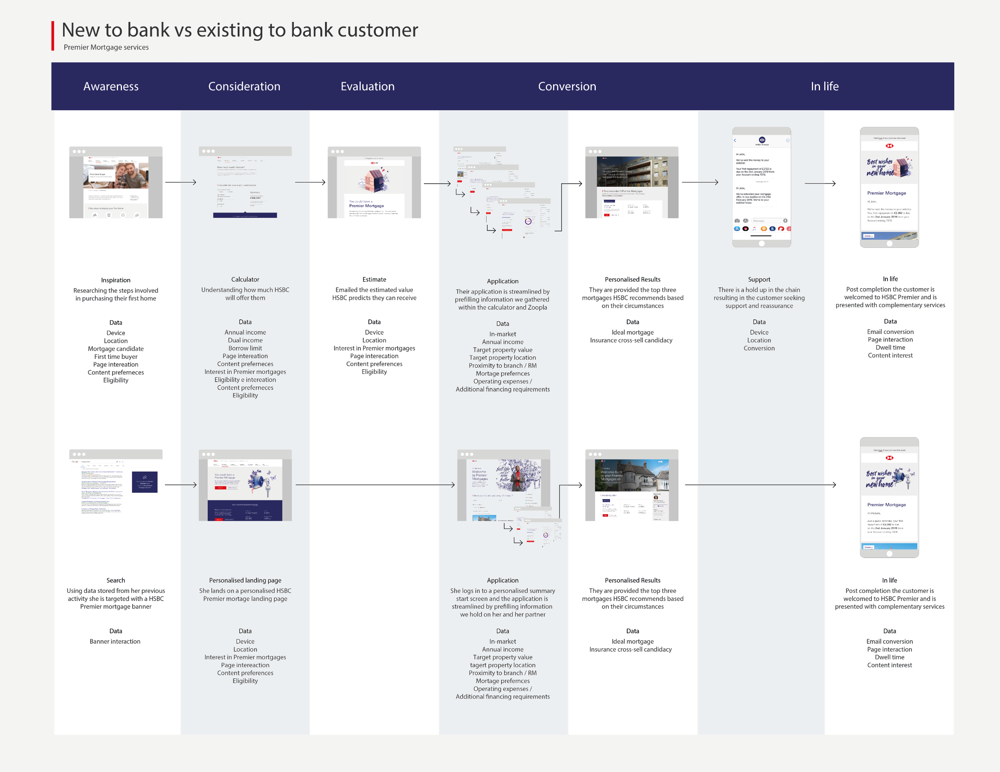
I led a series of concepts showing how Premier could use first and third-party data to create more relevant experiences at scale, grounded in what the bank could actually deliver. I worked closely with a UI designer to turn the strongest concepts into high-fidelity experiences for testing.
Geolocation spots an eligible customer at the airport and surprises them with complimentary lounge access.
Show the points they could have earned with a Premier credit card, then award them if they upgrade to Premier.
A flight or currency purchase signals a trip, highlighting Premier’s free travel insurance to encourage an upgrade.
HSBC pre-fills applications with information it already holds, so customers can just check and confirm.
Use purchase history to surface the Premier rewards most relevant to each customer, such as Amazon or M&S.
Monitor Help to Buy ISA savings to spot customers nearing their deposit target and prompt a mortgage conversation.
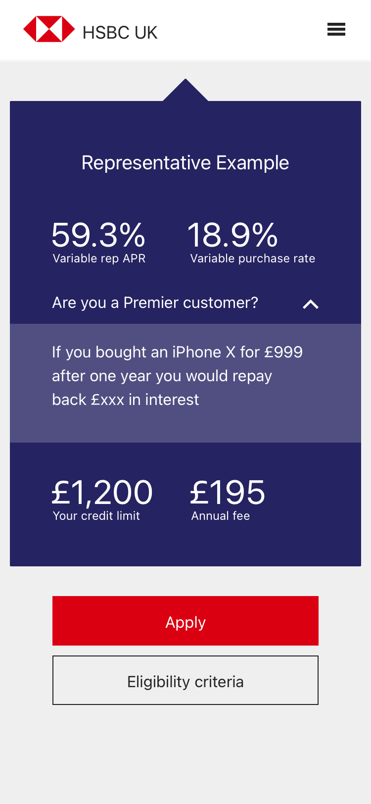
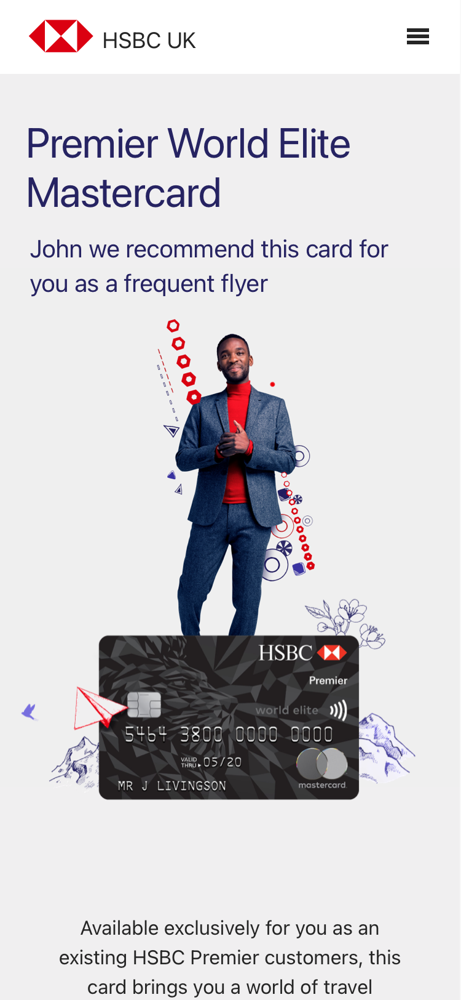
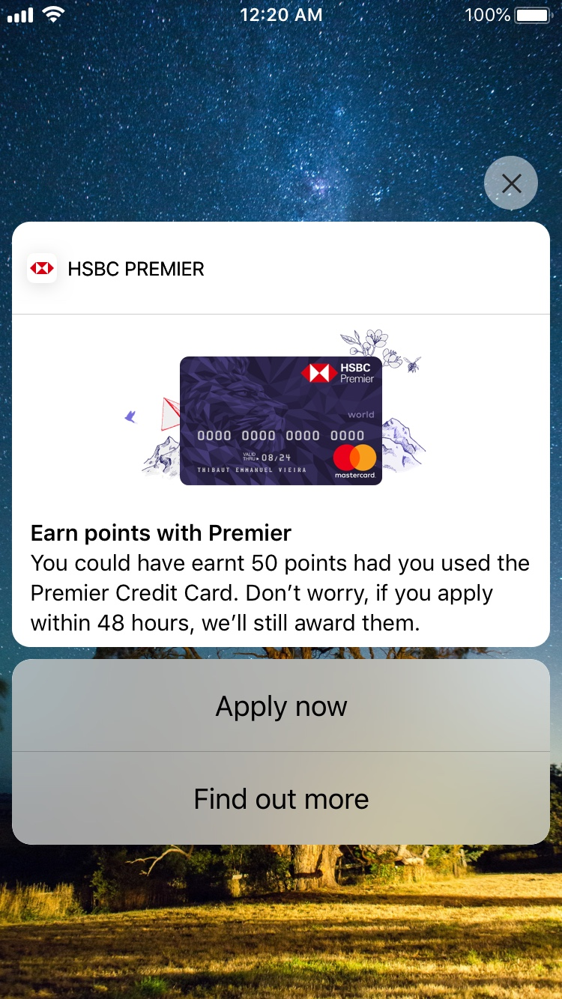
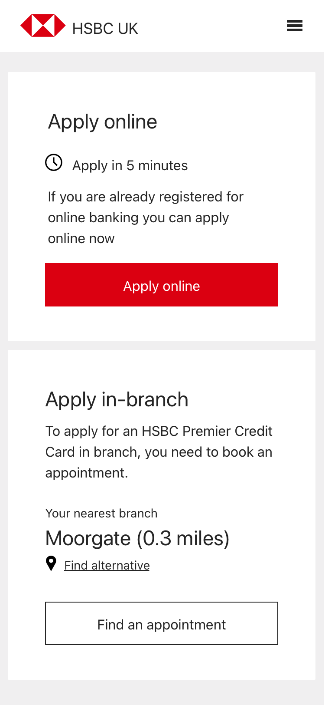
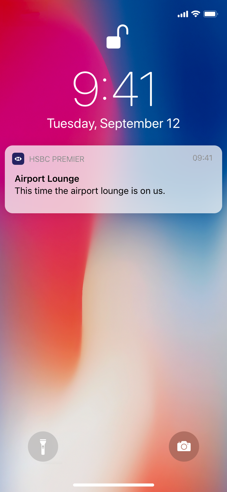
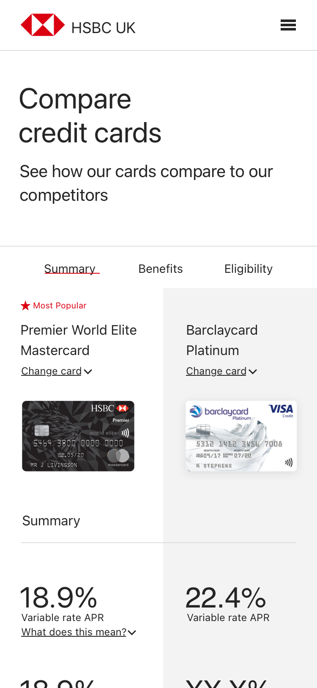
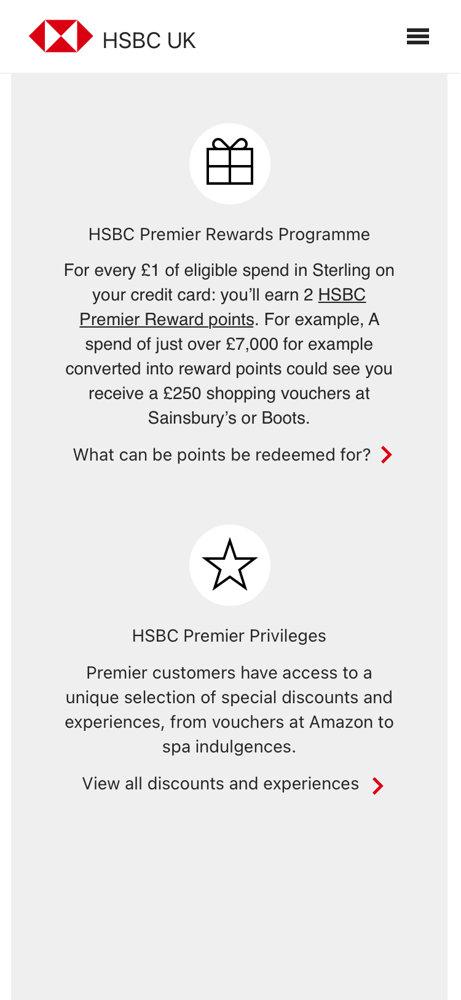
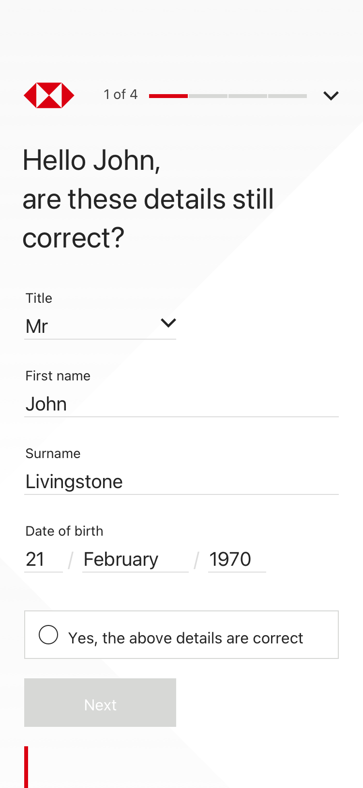
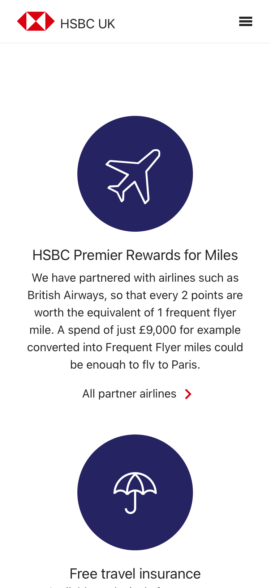
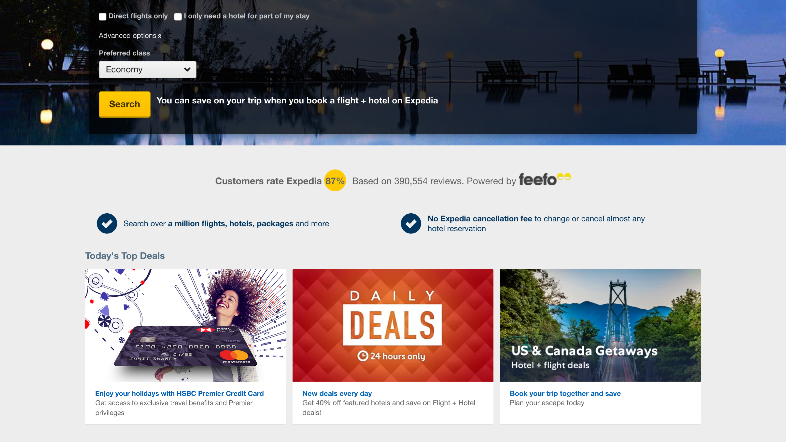
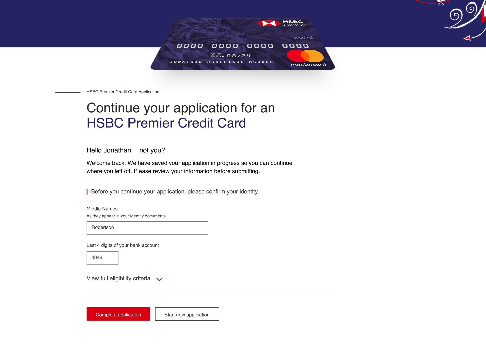
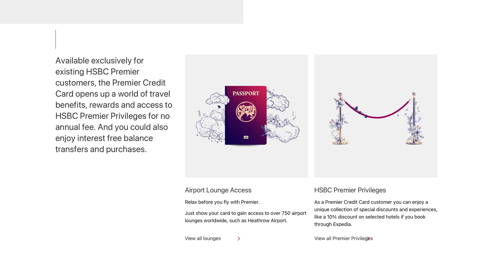
Senior stakeholders worried personalisation would feel intrusive for a premium audience. I ran moderated testing with 10 participants to understand when it added value and where it started to risk trust.
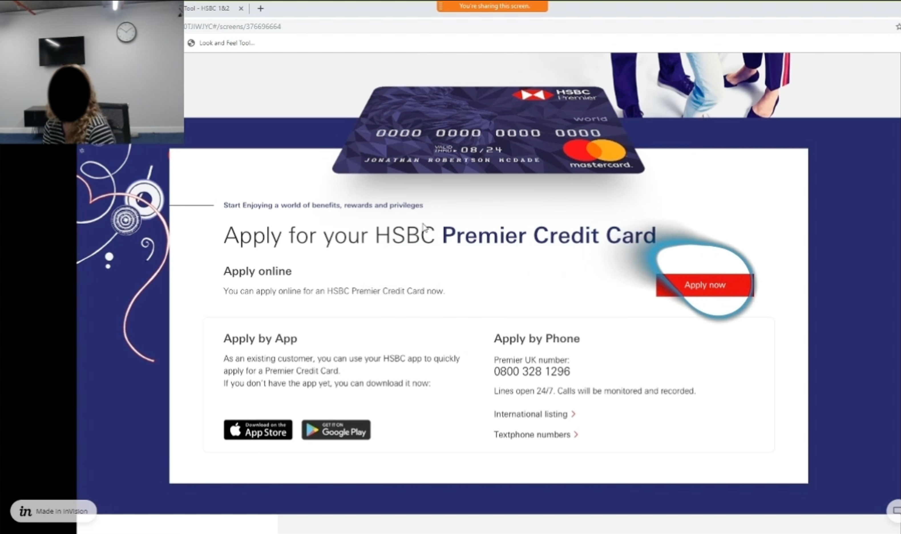
“All this is known by the bank anyway.”
“I like that you personalised the content to me, it stands out from other banks.”
“The application process is very easy and doesn’t take long, it helps that it’s pre-populated.”
“I’d feel more confident about pre-filling if I knew how it worked.”
“It’s very simple, very easy, it makes me think have they missed asking me something.”
“I like it providing recommendations for me, but I’d feel differently if it impacted my children’s accounts.”
Be transparent about how first and third-party data is used.
Customers expected HSBC to already hold this data.
Trust in a regulated bank made appropriate data use feel acceptable.
Subtle personalisation was acceptable in logged-out experiences.
Overt personalisation, such as pre-filling, should stay within logged-in experiences.
Never personalise content around a customer’s children.
Is there commercial value in personalisation?
Customers were 70% more likely to explore targeted products, while pre-filling cut application time by 21%.
Do customers actually want it?
80% were comfortable with personalisation when HSBC was transparent about how it worked.
Where does it tip into intrusive?
Customers were comfortable with subtle personalisation in logged-out experiences, but overt use of their data crossed the line. Anything involving children was ruled out.
Can we deliver it, legally and technically?
Legal, commercial, product and engineering all signed off.
“Tom is very skilled at understanding the business challenge and uncovering the pain points that drive satisfaction, personalisation and revenue. He’s a great collaborator, full of energy and ideas, and genuinely a nice person to work with.”